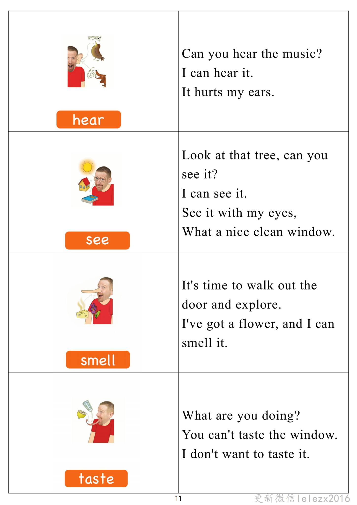

Day 10
Unit 4 · story
教材重点
网盘未提供逐日打卡原图；本级教材文件为“5.第五级单词卡.pdf”，以下重点结合单词卡与台词本整理，原文请看 Part 3。
Unit 4 · story · 7–8岁
go · train · boat · look
Hello, hello, my name's Steve.
台词本为机器转写，可能存在识别误差；不等同于视频逐字原声。
详细内容
Part 1 核心词汇
必须掌握 · 4 个查看橙色每日打卡 Day 10 原图

Part 2 跟读句型与句型拓展
左侧保留台词本原句，右侧为替换练习；拓展内容不是视频逐字台词。
Hello, hello, my name's Steve.
Hello, hello, it's time to play. It's time to play in English.
Plane boat.
Motorbike and bus, let's go to the castle.
Good idea, let's go to the castle, but how do we get there Let's go on your new motorbir, no.
Part 3 台词本全文
来源：第5级台词本 · 010.Wow!Orange - Unit 4 story_4_1a.pdf。以下保留网盘 PDF 的机器转写文本，仅清理了文件路径页眉和空行。
Hello, hello, my name's Steve.
Hello, hello, it's time to play. It's time to play in English.
Plane boat.
Train.
Motorbike and bus, let's go to the castle.
Good idea, let's go to the castle, but how do we get there Let's go on your new motorbir, no.
We can't go by motorbike, because this is great.
Hey, look at my new motorbike.
It's really fast, hey, say with me, but.
Really fast, too, it's a motorbike, it's a motorbike, it's a motorbike, what is it it's a motorbike, it's a
motorbike, it's a motorbike, yeah,
Let's go for a ride. Hell me on, okay, ready, steady,
You see,
So we can't go by motorbike.
Let's go by bus. I don't want to go by bus, no, I don't like the bus station.
Because, oh, I'm looking for my birth, and Maggie, of course, can you see them.
I can't. There are so many buses here.
Hey, say with me, but slowly.
There are buses, and again,
There are buses one more time, there are buses, too many buses, steve, oh, look.
Maggie, come on, let's go. There's a bus, I know there's a.
Desk.
Oh, there's another boss, steve that was dangerous.
Yeah, that bus nearly hit me, I don't want to go to the bus station again.
We need something else, oh, let's go by train or no, I don't like trains either. Well,
Last time.
Oh,
Oh, hey, I'm finally here.
At the train station, look, there's my train. Hey say with me, look, there's a train, there's a train, there's a
train.
And again, there's a train, there's a train, there's a train that's right, there's a train, hey.
/
-
/5/010.Wow!Orange - Unit 4 story_4_1a.txt[2022/3/29
星期二
6:51:49]
Oh no, hello, it's gone. Oh, no, there isn't a train.
Ah, well, I have to take the next train, right? When is the next train.
Cancelled.
Cancelled cancelled. Oh, no. Look.
There aren't any trains, oh, say it with me, but slowly.
There aren't any trains. There aren't any trains.
There aren't any trains. You see, maggie, okay, then let's go by.
No, I don't like boats either. Hey, remember last time.
It's a beautiful, sunny day, great to go sailing in a.
There's a boat, there's a boat, there's a boat, there's my boat. Hey Maggie, what are you doing I'm going
sailing in a.
Oh, what do you mean there isn't a bar.
Your right, maggie, oh, there isn't a boat.
There isn't a boat, say it with me, there isn't a boat one more time.
There isn't a boat.
That water was really cold, okay, steve, some no boat.
No trains, no buses, no motorbike, then let's go by helicopter, no plane.
No hot air balloon, hot air balloon.
What? OK? Let's go.
By hot air balloon, how Maggie, this is great. Oh, look.
There's a plane.
Oh,
Oh no, we're flying over.
Everywhere, there are planes. There are planes.
Are there any planes? No? There aren't.
Oh good, oh, maggie, that was crazy. How many planes.
But look around, hey, there aren't any planes. He say it with me, but slowly.
There aren't any.
Planes, and again, there aren't any planes. Last time, there aren't any planes, no.
Hey,
Oh, look, hey, when Lily at the castle, I can see the castle, it's getting bigger.